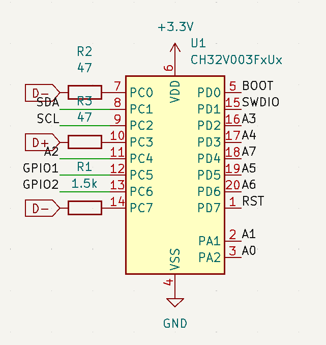
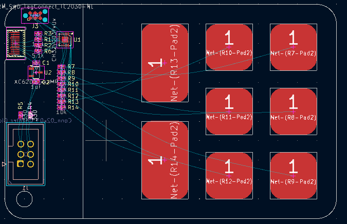
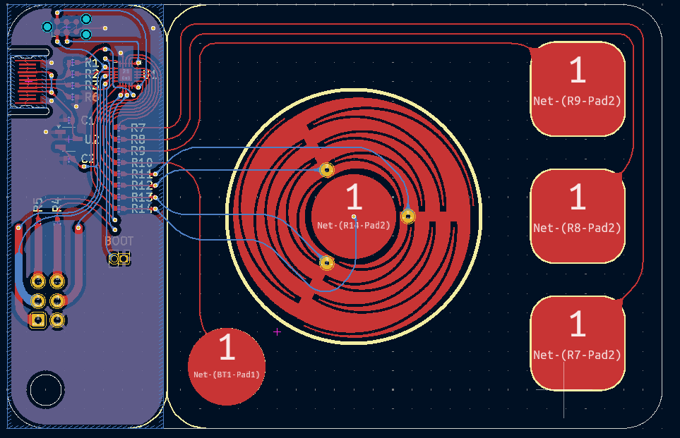
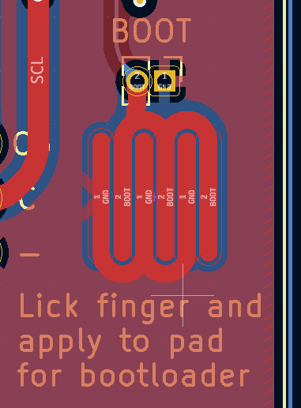
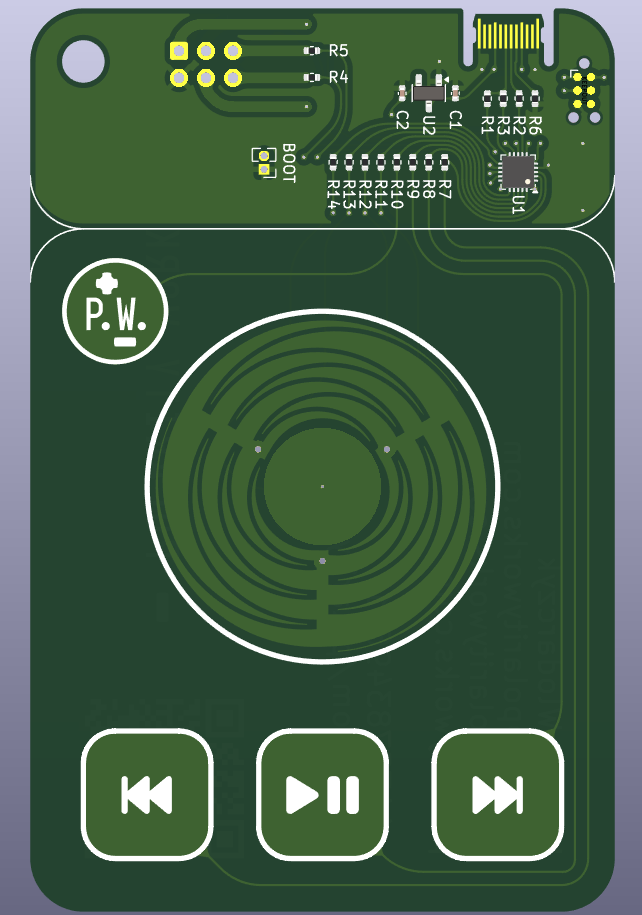
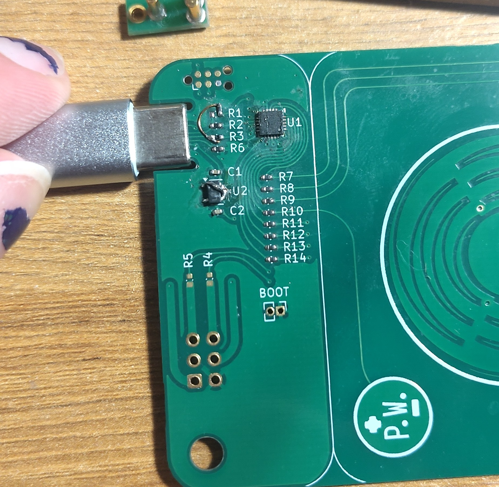
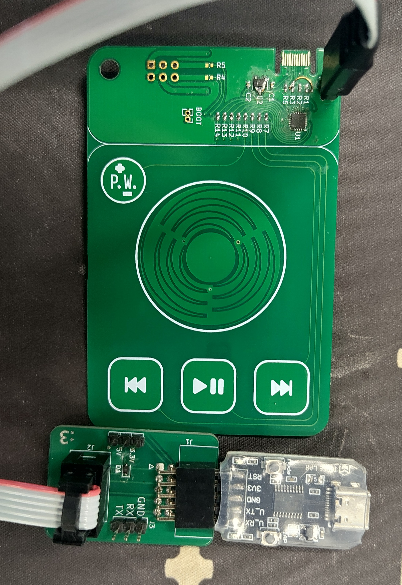

Capacitive Touch PCB Business Card
DATE
Concept
This year I'm trying to get out and about more to conventions and meetups and the like, and I think it'd be fun to have some sort of PCB business card that does something interesting. Since I do a lot of keyboard things maybe a PCB business card with buttons on it that you can plug into a computer and use as an input device of some kind.
Cost Optimisation
If this is going to be a serious business card it needs to be really cheap to manufacture, so unlike many of my other projects where I'm more than willing to chuck money at the problem until it goes away that won't fly here, so no nRF52s, no STM32s, no physical buttons, this design needs to be an exercise in minimalism. It's also a very good excuse to learn a new microcontroller family. The CH32 family has been very popular in open source projects, and it's easy to see why, it'll run without any external components, it's ridiculously cheap in even small quantities and it's very capable too, with the qfn package one having 18 GPIOs. As a result of these traits it's also got excellent software framework support too, even a library with USB support that'll work perfectly for a simple HID device. The rv003usb library even supports a usb bootloader in the dedicated bootloader flash space.
Originally I was going to use some Sam&Wing SM06 capacitive sensing ICs, which I'd seen used on a keyboard project before and saved in the library of interesting parts, but they're pricey, more than the microcontroller, and only have 6 channels, limiting me to 6 buttons unless I fork out for two of them and that bumps the price of these up beyond the range I'm willing to just throw them at people. I have seen CNLohr do capacitive sensing with just the pins of a microcontroller so wondered how feasible that is and dived down that rabbit hole.
Capacitive sensing with microcontroller ADC pins
A microcontroller ADC will have an internal sampling capacitor it uses for the measurements, I must admit to not being too well versed in how exactly this works, but my understanding is it times how long it takes a known signal to reach the same level as the charge in the capacitor or something along those lines. Either way it has a capacitor, and since humans are also capacitors we can exploit this principle to sense the presense of fingers.
From my research it seems like Microchip were some of the first people to document this publicly, and provided this Application Note that explains the principles of the technique. The internal microcontroller capacitor is charged up using the pullup resistor on the IO line, the external capacitance is grounded, then you sample the external pad. If the external capacitance is low, when there's no finger on the sensor, the majority of the voltage stays inside the internal capacitor, leading to a high ADC value. If there's a lot of external capacitance that pulls the measured voltage down and you get a lower ADC value.
This technique was refined and further documented by Tuomas Nylund in 2012, he also provided some code samples using an Atmega32U4. His technique involved fully discharging the ADC capacitor and charging the external capacitor then doing the sampling. This leads to the ADC input going the other way, I.e. low when a finger isn't present and higher when a finger is present.
CNLohr created a fantastic little project doing capacitive sensing on the CH32V003, but after looking at their code I didn't really understand how it worked, I think the interaction with the LCD display was complicating things. Fortunately not only does their CH32V003fun library have a nice example, it also has a library that does it all for you. On the one hand it saves me creating a worse implementation, but on the other I was kind of looking forward to figuring it out on my own.
Development
CH32V003 development boards are super cheap, I selected some MuseLab boards available on AliExpress, which I could get 6 of and the special programmer (I like the CH32's one wire debug connection) for $15. I've got good experience with a MuseLab iCESugar FPGA board I used on a previous project. For the project stack I started with the CH32V003fun PlatformIO framework, and bolted on the the rv003usb library. The composite hid example was used as a starting point, but instead of using a mouse and a keyboard, I changed it so it uses a HID consumer control device on the first endpoint and a keyboard on the second endpoint. I know from experience that the keyboard volume keycodes do not necessarily work on all platforms, the consumer control ones have a much higher chance of success. I'm not entirely sure why there's no HID report IDs in the descriptor used, I guess if there's only one and the USB endpoint is being continually polled it doesn't matter but I faithfully replicated the descriptor without report IDs.
By this time my dev boards arrived, and I ran into a small problem, it wouldn't enumerate at all. I went to the example USB pinout, which didn't help, so I cloned the rv003usb repo and used make to compile and flash a demo program and it enumerated happily. Figuring I made a mistake in my code I went through it with a fine tooth comb, tweaked some small values and tried again in platformio to no success. Copied my code into one of the rv003usb sample folders, compiled and flashed and it worked right away! Every time I use platformio I tell myself it's better now and will work nicely for my project and every single time it finds some new and exciting way to disappoint me. After a few tweaks to get the minichlink utility reading the debug printf strings properly it was off to the races. This was easily my most painless experience learning and testing on a new architecture, and I cannot give enough kudos to CNLohr and all the ch32v003fun contributors for their incredible work making this powerful and simple library!
I jammed some 10k resistors into a breadboard to act as the capacitance sensing probes and ran into an interesting thing. The values from what was ostensibly a very similar configuration for each pin diverged pretty far. This is most likely due to this dev board having an led on one adc pin and a crystal oscillator on another two, but cannot be discounted in the final PCB design, so I conceived of either a persistent calibration technique or one that calibrates every boot. I wasn't sure if moving the board around in different locations would meaningfully affect the baseline values. Not that I was expecting it, but capacitive sensing doesn't need any debouncing or anything, which is very nice.
It's a bit of a hack but each key is getting a dedicated slot in the HID report. The macro functionality overrides the keys until the whole thing has send (which can never be more than 640ms because of the macro queue length). This uncomplicates managing which keys called which actions for uses where keys get held down. The descriptor was tweaked for a consumer size of 8 to be used, so conceivably every ADC button could be pressed simultaneously doing consumer actions, as unlikely as it'll be. The regular keyboard report was 6 keys, having more key roll over can cause compatibility issues. The hid demo code from rv003usb absolutely hammers the usb endpoint by answering every request. I didn't think this was actually necessary, but when I tried to send reports on demand I got angry USB messages in dmesg so ended up not fiddling with it. The python tool hid-recorder is a godsend when dealing with hid development and descriptors, it makes the whole process really simple.
Modifier keys are fairly useful for sending key commands, without them all sorts of symbols are inaccessible. Whilst hardcoding the mods I need for the default firmware is a valid option, it's a bit limiting if people want to extend it. Drawing on my experience from ZMK I implemented a basic hid usages header file with all the important keyboard and consumer keys, as well as implementing modifiers with a bit of preprocessor magic. The modifier is shifted into the upper byte of a 2 byte value, and when time comes to send it it gets stripped out and sent separately. The text sequence macros are treated as a 2 byte value with FF in the lower byte and the macro ID in the upper byte, the consumer keys are identified by putting 0xFF in the upper byte. This isn't ideal as conceivable pushing every single mod simultaneously gives the same report, but if you're pressing both shifts, controls, alts and gui keys on your keyboard when most keyboards dont even have two gui keys I want to meet you and understand what you're trying to do! I undefined the often unimplemented right GUI key to be sure there would be no conflicts with people reconfiguring the standard firmware.
It would be very nice if macros could be written down as strings and the preprocessor converts that to the required keycode tokens, however the level of galactibrain hectic death preprocessor voodoo that would be required is well beyond me and is left as an exercise for the reader, as it stands macros must be defined as a chain of keycodes in reverse order (so macro queueing could be added in the future). I wrote a little python helper script to do this for web URLs and spit out an array, it's not very complete, if I have some more time I might add more keycode support to it.
After a little bit of bugfixing and tweaks to get it working nicely I had 5 channels of key pressing working as well as functioning macros. There wasn't a way to prototype the wheel so I just had to pull the trigger on the PCBs and develop the wheel funcitonality on the real boards, but I had confidence I could get it working, everything had been really smooth sailing so far.
PCB
The PCB has a few requirements, it needs to fit inside a standard 85x55mm business card form factor, with a PCB type C connector, with no sharp bits poking out to interfere with it being put in a pocket or wallet. It has to be practical after all. After discovering the SAO standard, I threw that into the schematic too, might as well run all the GPIOs I've got on the board. Add a little hole punch so I can keep a bunch of them on a lanyard and that's about everything. The reference schematic for the USB library is dead simple, 3 resistors, two capacitors, a 3.3v voltage regulator and the CH32V003. For the voltage regulator I simply went on lcsc and sorted by price, revealing the 1c MSKSEMI XC6206P. Programming is handled by the Tag-Connect connector, I designed a little interface board to link my Tag-Connect cables to the WCHlink programmer. The SAO standard has two I2C pins and two GPIO pins with 330 ohm resistors in series. The rv003usb library has support for a bootloader allowing the CH32 to self update over USB without any debugging hardware. For a 10c microcontroller that's incredible! Because the main firmware also uses USB the board needs a dedicated bootloader pin for a button that can be shorted to ground, as well as a GPIO driven pullup to forcibly re enumerate the device. Whilst most ch32 implementations I've seen dont use the reset pin on the debug header I routed that too, so literally every single GPIO is used. It's value for money!

For the first version I created some KiCad footprints that were just some SMD pads with the mask layer deselected so they got covered in solder mask and organised them in a little grid. Because I'm limited to 8 inputs two were a bit bigger than the rest so it was still a nice even grid. They cannot have any ground plane behind them, so the components were separated from the buttons. Whilst I was looking at this more I thought it was a touch dull.

PCB 2: Electric boogaloo
If we're doing capacitive sensing already why not do something more interesting than just push buttons? Touchpads and touch sliders are capacitive sensing based, but doing a touchpad seems hard, and a slider is a bit too boring, so what about a scroll wheel iPod classic style? The Tangara MP3 player uses a capacitive scrollwheel and the awesome people behind that project have released a Generator that can create an SVG file with the geometry required. With 3 sensing channels you can extract the angle a finger is placed on the wheel, in theory at least. The generator wouldnt make the exact geometry I wanted to import into KiCad, but a little trick is you can just inspect element and change the ranges on the sliders and it'll very happily go outside the normal ranges for you.
Importing this geometry into KiCad proved a little challenging, the exported svg from the web app wasn't ideal for directly importing into KiCad, and I didn't really feel like fighting KiCad for a million years, fortunately someone did the difficult bit already and created an eagle PCB with the footprint here. It also turned out to be absolutely bang on the size I wanted. It fit perfectly in both versions, fitting well for the more professional ROTR style one, and also working awesome in the personal one.

On most designs I work on the space is so tightly constrained that everything has to be optimally routed, but on this space is less of a constraint, so some effort was invested on making it look pretty and ordered. All the traces also got a dose of rounding from the KiCad rounding plugin, makes everything look very nice. The personal one is likely to be given to the sort of people who are going to try and hack it themselves, so in addition to the tweezer jumpers a series of exposed copper traces that can be shorted with a wetted finger was added for bootloading the board in the middle of a field.

Silkscreen art
For the front side on the professional one the similarities to the ROTR were emphasised, it was designed to mirror the knob and 3 button layout, with fontawesome logos used for play, pause and track skipping, and a Polarity Works logo in the top corner that's also an additional capacitive button.

Apart from a few vias, four traces and the SAO header, the back of the PCB is completely untouched, which means I had total creative freedom to fit graphics in. Lots of QR codes were used for both the personal and professional ones, with links to my company's website, personal website and personal communication methods, along with more human readable information too. The scroll wheel has through hole via pads, so I got a bit creative with the rotation of the wheel to line the hole up with the hole in a d letter. The personal board got the full SAO pinout labelled on the top side too, and some nice artwork on the back I commissioned.
Because of the type C contacts these PCBs needed to be ordered in ENIG finish, I decided to try 0.6mm too as that's closer to the right side of the spec and it wouldn't be ideal if this pcb damaged users cables. The specs of these pcbs made them rather costly to order, so a few prototypes were ordered in conventional green soldermask to ensure everything is fine before an expensive mass production run.
When the PCBs turned up I impatiently bodged a different voltage regulator into the board and started testing, and very quickly ran into some issues. It wouldn't negotiate over a USB C to C cable for 5v correctly, indicating the CC pin wasn't making the correct connection. I first blamed the connector itself, and tried adding solder to the pads to give them some bumps for the cable to connect to, and adding tape on the back to make it more secure in the cable. Neither of these tricks made any difference, so I hooked up an A to C instead so it would get power, flashed the in progress firmware and found that it wouldn't enumerate over USB either. Dmesg logs showed it was trying to enumerate, so the contacts were definitely making some contact, but it still wasn't playing ball. The problem turned out to be that I'd managed to get the connector fully mirrored, so CC was in the Vconn pin position and D+ and D- were swapped. After running a bodge wire for the 1.5k pullup to signal device presence it worked spot on and I could progress to testing the buttons and developing the wheel logic.

Wheel maths
The fundamental logic of the wheel is that each position on the wheel has a unique combination of areas of two of the three electrodes, apart from the positions where the finger is directly on top of one of the electrodes. Therefore by sampling the values of all three electrodes once you can determine if a finger is present, and if so what position on the wheel the finger is at. By repeatedly polling the wheel the previous angle can be compared to the current angle and if the angle has changed beyond a set sensitivity in one direction, add a consumer key event to the queue, if its going in the other direction add a different event to the queue.
The firmware samples all three electrodes and sums them. If this sum is above a defined value it's determined that a finger is present on the dial if then enters the angle determining routine. Each electrode value is normalised against the sum, then two paires of three conditions are evaluated. The first set of conditions evaluate which 120 degree sector the finger is in by checking which pair of electrodes is measuring some contact. Within each sector the angle is determined by only one of the electrodes, it's just linearly scaled from 0 to 120 based on the value of the electrode. These original checks will fail if the finger is exclusively on a single electrode however, so the additional conditions set the angle to 0, 120 or 240 if the finger is exclusively within the approproate electrode.
There are some issues with the state of the wheel logic as is. Currently it's a bit noisy, and it has some linearity issues, especially around where the finger crosses into the region solely occupied by one electrode. This manifests as general inconsistency in the behaviour, sometimes sending the wrong direction pulse, sometimes having an inconsistent angle reponse. It may be more suited for D-Pad or something along those lines but it works well enough for a scroll wheel as is.

Finishing touches
After some testing I found the central button in the middle of the dial was prone to being triggered accidentally when using the wheel, so that had to be disabled. A future option could be to treat the whole dial as a button and if it's tapped trigger the mute action. Also the other buttons were rather prone to being triggered with the sensitivity originally chosen, so that needed decreasing a bit to make things more reliable. The Tag-Connect pinout works an absolute treat, and it's something I'll be using on future boards going forwards

Source
Source files for the board and the (fully customisable) firmware for the business card can be found here. I went through and removed all the text from the back of the card before pushing to GitHub, I'm not keen on doxxing myself to anyone who stumbles upon my GitHub repo. If you are sufficiently cool and find me in person maybe I'll give you a card! I'm planning to attend WHY2025 and maybe 39c3 at the end of the year too.
Future tweaks
Whilst it's perfectly functional as is, there's definitely a lot more that can be done. Currently the SAO header, both the I2C and GPIO are unused, so at some point I'll develop that functionality. There's also different modes, using the wheel as a D-Pad or perhaps even a crude joystick using the value from the center button to determine position out from the center as well as general improvements to debouncing and angle estimation. At some point I want to rework how the HID works so it only sends a report when something changes instead of hammering the endpoint, but that might take a bit more fiddling before it's reliable. This may also improve OS compatibility, I had trouble making it work on a MacOS Monterey PC